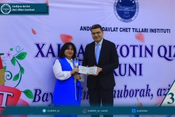
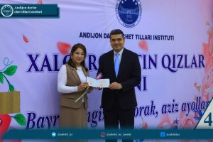
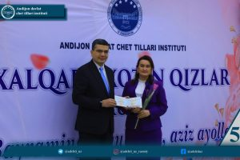
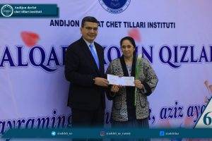
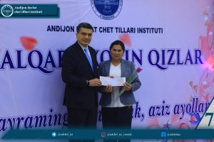

Xabaringiz bor, bugun Andijon davlat chet tillari institutida 8-mart — Xalqaro xotin-qizlar kuni munosabati bilan «Nafosat va go'zallik timsoli — Ayol» deb nomlangan bayram tadbiri tashkil etildi.
Ushbu bayram tadbiri kutilmagan va quvonchli voqealarga boy bo'ldi. Tadbir boshida institut rektori, professor Dilshodbek Abduvahidovich Rustamov o'zining samimiy tabriklari bilan birga, oliygohimizning bir guruh zaxmatkash olimalariga uzoq kutilgan ilmiy daraja va unvonlarning davlat namunasidagi hujjatlarini tantanali ravishda topshirdi.
Ushbu tantana nafaqat shaxsiy muvaffaqiyat, balki institutimiz ilmiy salohiyatining yanada yuksalayotganligidan dalolatdir.
Filologiya fanlari bo'yicha falsafa doktori (PhD) darajasi bilan:
Zaynobiddinova Irodaxon.
«Dotsent» ilmiy unvoni bilan:
Yusupova Nargizaxon;
Boltaboyeva Nargizaxon;
Xaydarova Nigora;
Aliyeva Ra'no;
Sirojiddinova Soxibaxon.
Ushbu ilmiy unvon va darajalar muhtarama ayollarimizga bayram arafasida haqiqiy «bayramona tuhfa» bo'ldi. Rektor o'z nutqida olimalarimizning ilm-fan yo'lidagi zaxmatli mehnatlarini e'tirof etib, ularning kelgusi tadqiqotlarida ulkan zafarlar tiladi.




